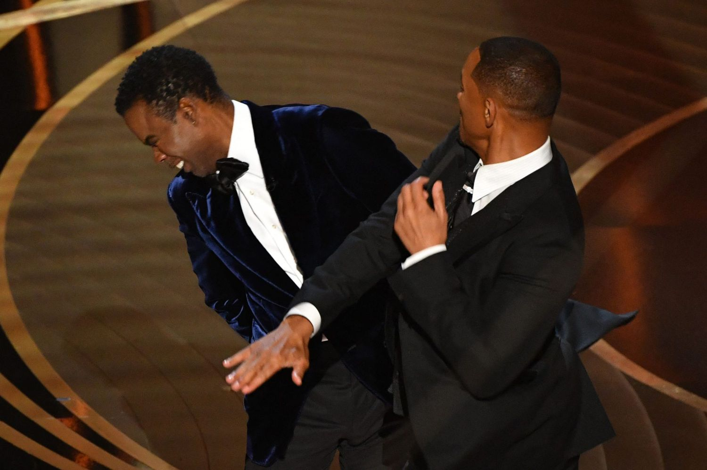

I'll change after I die. Wait. I guess someone will have to change me.
"We're going to be here awhile, folks -
I count eleven 'not guilty's'
and one
'fry the bastard.'"
~ "The Rejection Collection: Cartoons You Never Saw and Never Will See in The New Yorker"
This isn't much different than any other website, is it? Aww. So sorry.
"What I'd really like to do is something extraordinary, something big, something mega, something copious, something capacious, something cajunga, but I'll probably end up working at Great America, mopping up hurl and lung butter."
~ Wayne Campbell

(Are you speaking Midwesternish?)
Insert some of Mad Magazine's Spy vs. Spy stuff here.
Whatever you have to do ... just make this RIGHT, okay?!?!
From "Wayne's World II":
Wayne: "You can see him?"
Rip Taylor: "Well, of course. I mean, how are you going to miss a half-naked Indian?"
from the movie "Love, Actually", starring Hugh Grant:
"Ooooohhhwwwould we call her chubby?"
YouTuber: charlietittle1988
I'm actually not a fan of sarcasm. If you dig deeper into the minds of people who are being sarcastic, the reason should be apparent.
derision: ridicule
envy: jealousy
projection: a nasty trick
I understand why some journalists on the national news channels have decoy spouses and children. Their lives are indeed threatened by people who don't want secrets revealed. On a lighter note, if my hunch is correct, I can't wait until Ana Cabrera bangs me.
Name That Movie
"Grief is nature's most powerful aphrodisiac. ...
... funerals are insane. The chicks are so horny, its not even fair. It's like fishing with dynamite."
~ Wedding Crashers, Chazz Reinhold (Will Ferrell)
I think I figured out why some people touch their faces when they see me. It's plain, old monkeyism!
1. Lift finger to nose.
2. Insert finger into nose.
3. Enjoy!
"Let's hang out with Kylie! She's a dancer - she can hook us up with gay guys!
Plus, she's famous! She can hook us up with spies, stalkers and muscular firefighters!"
"My name's Dudley Dawson. They call me Booger."
"Edgar Poe Wong. They call me Snotty."
~ Name That Sequel
My current rapname: NegativeOne
I went to the mall today. The snobs were out FULL FORCE!
... AND IT WASN'T EVEN THE GOOD MALL!
"Alot of comedians get ahead because they work with a big singer and they get in good with him and then the big singer takes them to all the jobs, you know. I worked with a big singer and tried to get in good with him, but it didn't work out. One night in his room, they had a party. I went over to him and said, 'If people are bothering you, maybe I could give you a hand and keep people out of your room.' He told me to keep out of his room."
~ Rodney Dangerfield, "No Respect"

Perhaps Planned, but also PERFECTED!
People only want to get close to me from far away.
Richard Pryor: toyish comedian, 80s icon, lover of life and all-time King of Ghetto Hockey
After someone dies, it's easy to think, "That person is still alive." It doesn't matter if you saw the body, the ashes or a commercial for jello-cake.
Do you talk during sex?
("What? Am I doing it wrong again?")
The military draft ended 50 years ago, but some people are still angry and fearful. They thought the military ended 50 years ago.
Spying on me has become an automatic thing for some people. They depend on it - their mood for the day, their conversations, all kinds of things. And it's all about feeling, you know. It's an addiction. I laugh about it, so they think it's okay. I'm like their little pet. Apparently, if the government is doing it, it's exquisitely legal. Anyway, it sometimes makes me think twice, like I should be concerned about every move I make. If I leave my curtains closed for too long, the spies think I'm sulking. They probably get mad. It makes me worry about who I might see the next time I go out.
Jeopardy! is particularly good at correcting my grammar in realtime, subtly, subliminally, creepily.
Oh, to time it perfectly,
over and over and over again,
the highest moment of ecstacy,
for you and ____________?
but the best is always yet to come,
between dark and light,
anger and jealousy evilly hum,
G*D@MNIT, YOU'RE NOT DOING IT RIGHT!
I'm sure it's more fun when not EVERYONE is guilty.
I live in an apartment building with about 100 units. You know how it is. Even though many of the tenants never come out, they still think of the place as one big family. The other evening I was frightened by some old guy in a bathrobe and slippers. As he approached me in the hall, he had that permafrown look on his face and his eyes were fixed on me. He stopped in front of me and scoldingly blurted out, "YOU BETTER START CONTRIBUTING, YOUNG MAN!!!!!!!"
What is funny? Please explain here ______________________________________________________________ _________________________________________________________________________________________________ _________________________________________________________________________________________________ _________________________________________________________________________________________________
Some people want to keep abortion legal just for the emotional opportunities.
So I've been having sex with a very intriguing woman for a few weeks now. She told me she would like a few quickies in the coming days. She burst into my apartment just now and we did some really wild things. It was all over in three minutes. As we were talking afterward, she casually mentioned a guy who she had sex with in the "distant past" and I swear I wouldn't have been so grossed out if she hadn't been talking about 10 minutes ago.